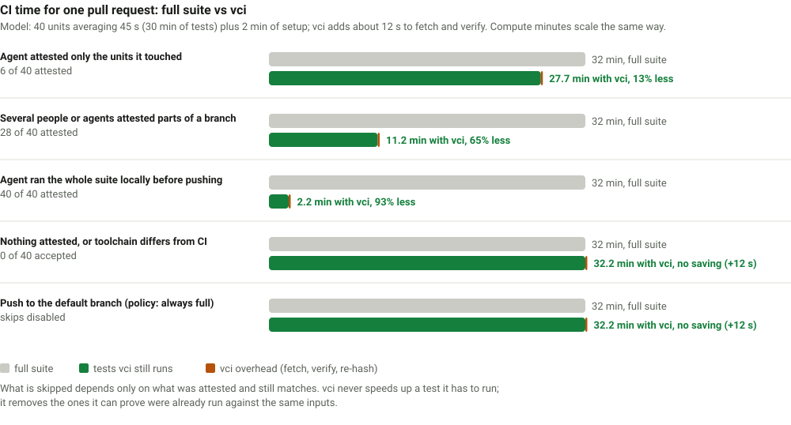
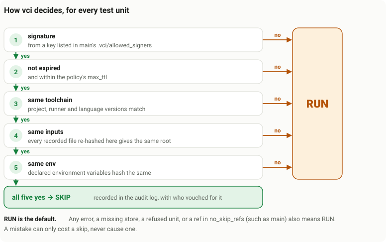

Stop paying CI to re-run tests you already ran.
Every push re-runs the whole suite, even the tests a developer or an AI agent just ran on the same code. vci proves which tests passed, so CI skips them: up to 90% less CI time per pull request, with a signed record for every skip and never a false one.
- up to 90%less CI time when the suite was run locally first
- 0known false skips after adversarial testing of every adapter
- ~10 sto verify and plan a pull request on a GitHub runner
- 6test runners: Vitest, pytest, Go, Cargo, Rails, RSpec
See it in motion
A change made in an agent's sandbox, attested, pushed through git, and skipped by CI. Press play, or step through with the arrows.
What it saves
Only attested tests that still match are skipped; everything else runs as before, plus about ten seconds of verification.

The chart above is a model. For a measured benchmark of this repository's own demo projects, where a commit with nothing to run costs vci four seconds, see Measured on this repository.
How it works
An attestation is a signed record of one test run: what ran, a hash of every input it used, the result, and who ran it. vci makes it on your machine and checks it in CI.
Run and record locally
vci run runs your tests with a collector switched on. The collector notes every file, directory listing, missing-file probe, package version and env var each test used.
Sign and push through git
vci signs that record with your SSH key. It travels as git-meta metadata on refs/meta/main: vci push and vci fetch are git push and fetch, with no server or database.
CI re-checks everything
vci plan checks the signature against the signers on the base branch (the branch the pull request merges into). It re-hashes every recorded input from its own checkout and skips only on an exact match.
The default verdict is always RUN: any error or doubt means the test runs. Here is the whole loop in a terminal:
$ vci run src/b.test.ts ran, collected inputs, signed, stored $ vci push # later, in CI $ vci plan --base-ref origin/main SKIP src/b.test.ts (attested by alice@example.com) RUN src/a.test.ts (no attestation) RUN src/c.test.ts (inputs changed) 1 to skip, 2 to run
Works with your test runner
A unit is the smallest piece of a test suite vci can skip. Each runner has its own, and one repository can mix several runners.


Vitest
Unit: a test file. Vitest 3.2 to 5, Node 22.15+.

pytest
Unit: a test file. pytest 9 on CPython 3.11 to 3.14, through uv.

Go
Unit: a package. Go modules, Go 1.26.

Rust (Cargo)
Unit: a cargo test target. Rust has no hook for run-time reads, so inputs are decided conservatively.

Rails
Unit: a Minitest file. Rails 8, Ruby 3.4, SQLite or a database server.

RSpec
Unit: a spec file. rspec-rails 8 on Rails 8, or plain Ruby projects with RSpec.
Logos are trademarks of their respective projects and are used only to identify them.
What you can rely on
Fail open
A missing, expired, tampered or unreadable attestation only ever makes a test run, because nothing in the store is trusted on its own.
Trust comes from the base branch
CI reads the allowed signers and the policy from the base commit, so a pull request cannot add its own key or loosen the rules.
Observed inputs, not guesses
Collectors record what each test really read at run time, including files it looked for and did not find.
Laptop to runner
An attestation made on macOS arm64 can be accepted on a Linux x86_64 runner when the toolchain and inputs match.
In CI, every unit goes through these checks, and a single "no" means it runs:

Know the limit. An attestation proves who made a claim, not that the test ran. A trusted signer can lie and a stolen key can sign. Keep the signer list short and keep full runs on your default branch. See the threat model.
Try it in five minutes
# install (or, without Homebrew: see Get started)
brew install pandelisz/tap/vci
# in your repository
vci init --adapter pytest --key ~/.ssh/id_ed25519.pub
git add vci.toml .vci/allowed_signers .git-meta
git commit -m "Enable vci"
# merge this commit to main: CI trusts only the base branch
vci run tests/test_b.py --key ~/.ssh/id_ed25519
vci plan --base-ref origin/main
vci push